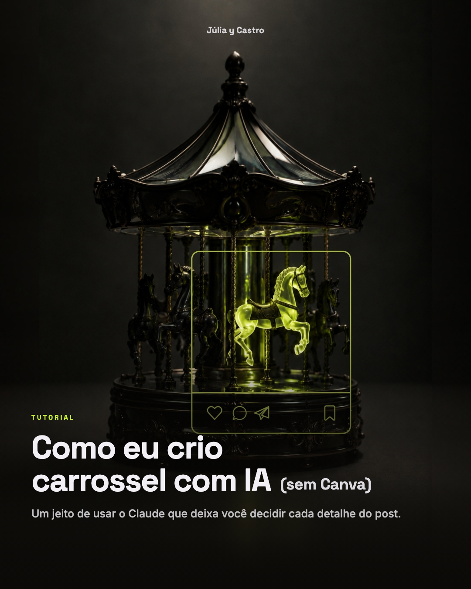
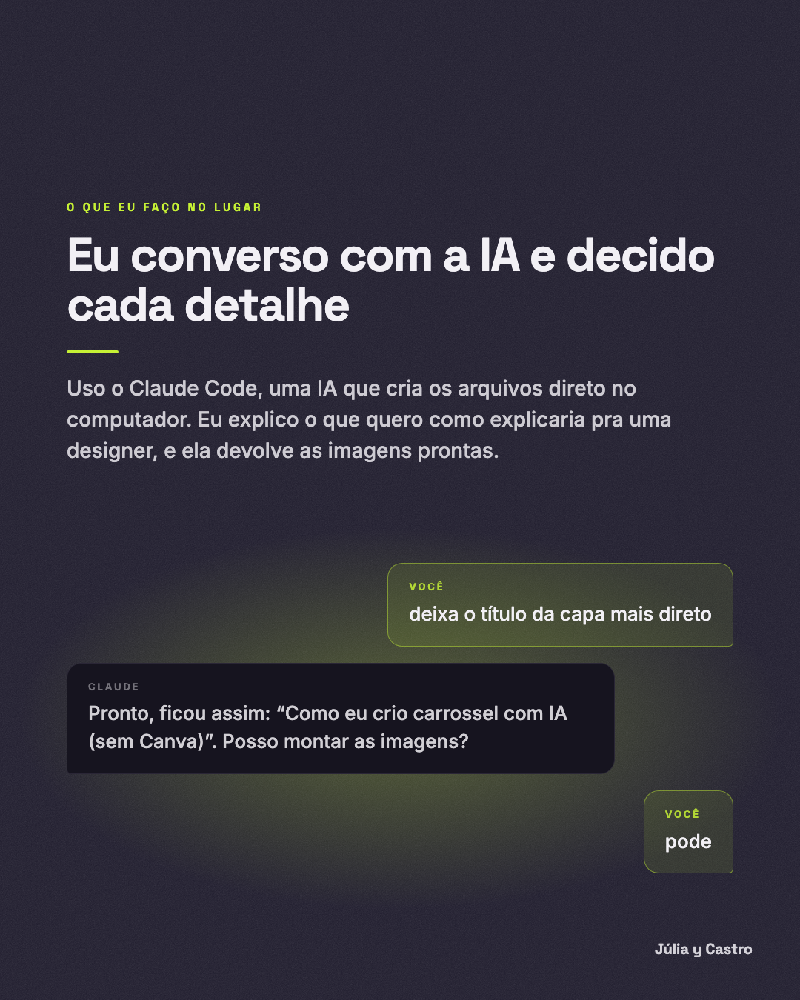
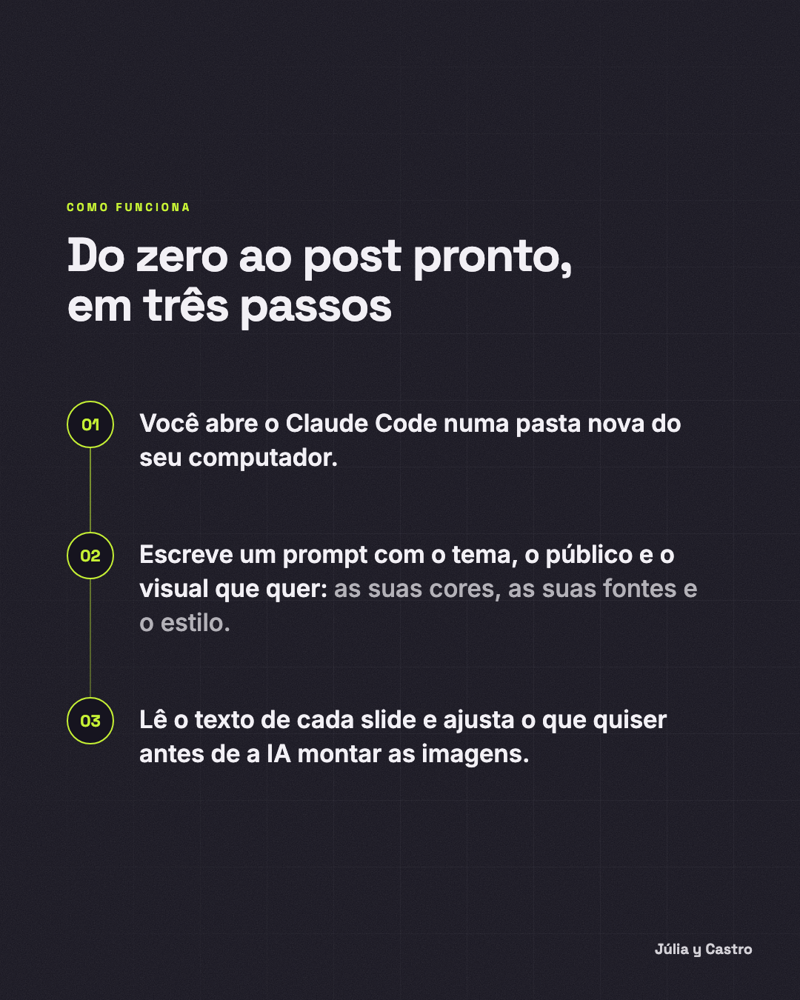
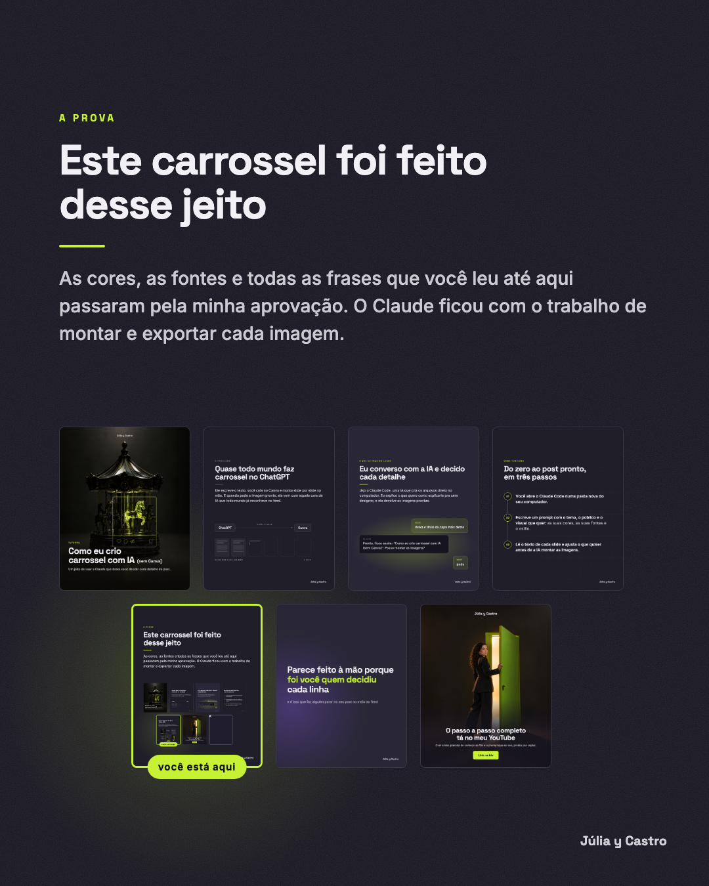
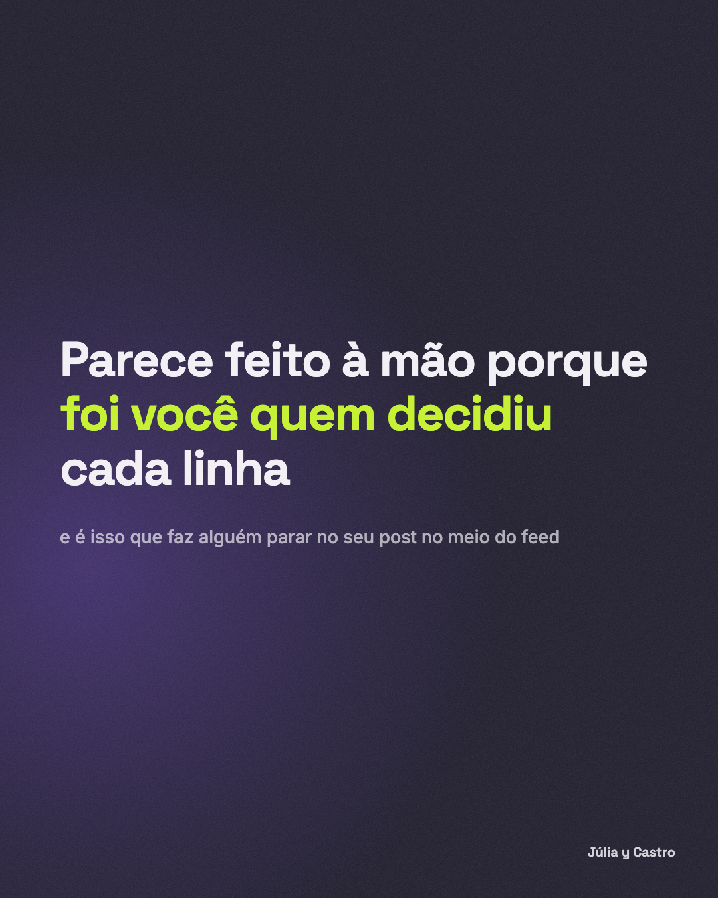
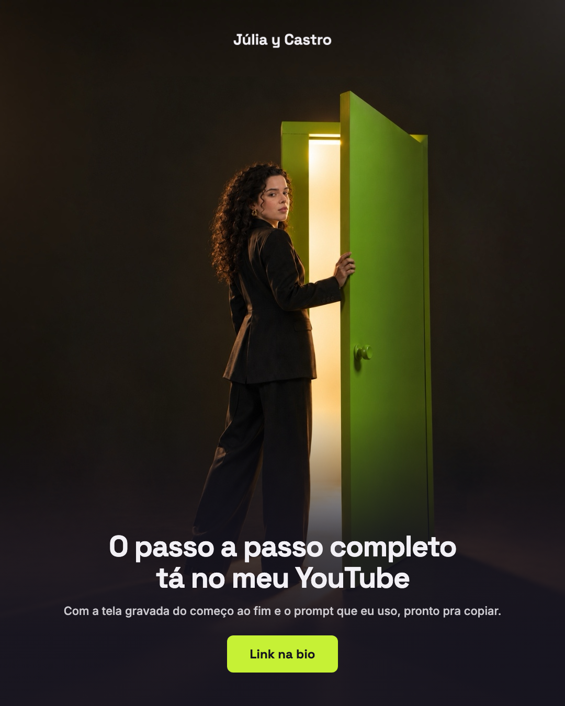

Tutorial
Como eu crio
carrossel com IA (sem Canva)
Um jeito de usar o Claude que deixa você decidir cada detalhe do post.
Um jeito de usar o Claude que deixa você decidir cada detalhe do post.
Ele escreve o texto, você cola no Canva e monta slide por slide na mão. E quando pede a imagem pronta, ela vem com aquela cara de IA que todo mundo já reconhece no feed.
Uso o Claude Code, uma IA que cria os arquivos direto no computador. Eu explico o que quero como explicaria pra uma designer, e ela devolve as imagens prontas.
As cores, as fontes e todas as frases que você leu até aqui passaram pela minha aprovação. O Claude ficou com o trabalho de montar e exportar cada imagem.




você está aqui

e é isso que faz alguém parar no seu post no meio do feed
Com a tela gravada do começo ao fim e o prompt que eu uso, pronto pra copiar.